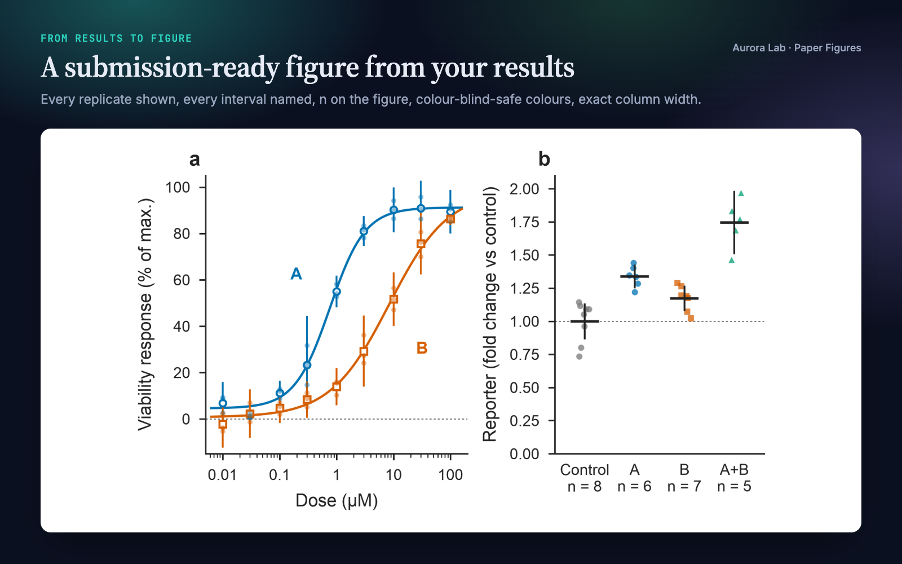
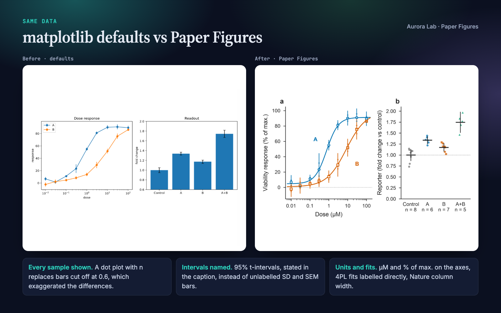
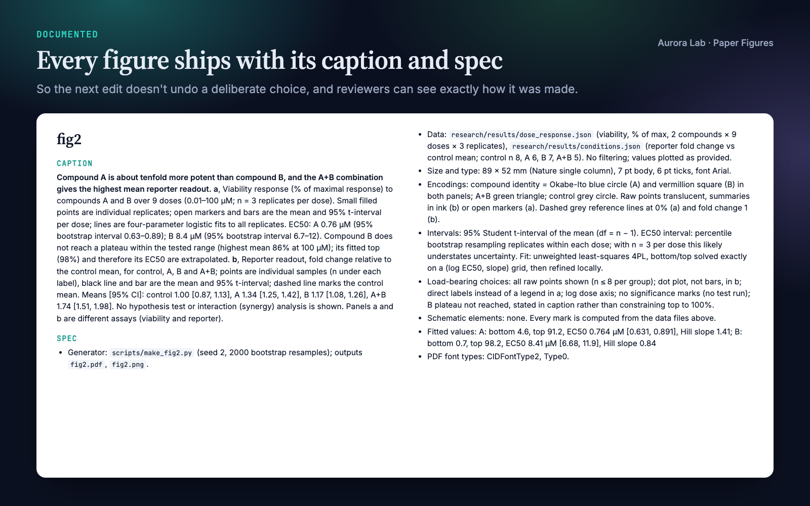
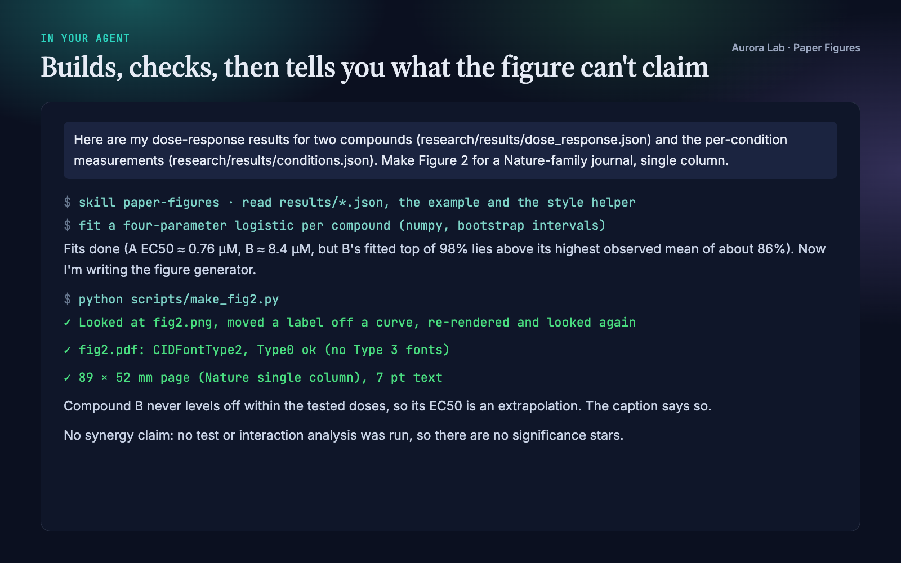

Overview
A figure is an argument: its shape makes a claim before anyone reads a label, and it can overstate a result as easily as a sentence can. Paper Figures turns your agent into a careful figure collaborator that:
- Picks the plot that fits the claim. Dot plots instead of bar charts for small groups, every interval named, n on the figure, accurate axis ranges.
- Backs every claim with the data. No cherry-picked examples, schematics marked as schematics, equations checked against the code, captions that match the evidence.
- Makes it journal-ready. Okabe–Ito colours, exact column widths, embedded TrueType fonts, PDF and PNG export from one helper.
- Verifies before it's done, including a font check that catches the Type 3 fonts many journals reject.
- Documents every figure with a caption and a spec file, so the next edit doesn't undo a deliberate choice.
Quick start
- Get the skill from Agensi and add it to your agent (Claude Code, Codex CLI, Cursor, Gemini CLI or any agent that loads SKILL.md skills).
- Have Python 3.10+ with matplotlib in the project's environment (numpy for the bundled example).
- Ask in plain words.
Example requests:
- "Make Figure 2 from research/results/dose_response.json for a Nature-family journal, single column."
- "We need a Figure 1 that explains the method. Propose a design before drawing anything."
- "Is this figure ready to submit?" (with the PDF attached or its path)
- "Panel c hides the replicates. Fix it and keep the colours."
No data at hand? The skill ships a complete worked example: python paper-figures/examples/make_example_figure.py --out research/figures builds a two-panel figure with its caption and spec.
What you get
The figure, its spec file and the session excerpt come from a real run: a fresh agent session with only this skill installed, given two results files and the first prompt above. The "before" image is the same data plotted with matplotlib defaults.




How it works
Two modes
- Unguided ("we need a Figure 1", "plot these results"): the agent names the claim the figure must make, looks at how comparable papers draw it, and proposes colour, type size and layout at true column width before writing any plotting code.
- Guided ("make panel c shorter"): it does exactly what you ask, but checks the facts it is about to draw and tells you once if a request would make the figure say something false, offering the nearest accurate alternative.
The steps
- Design: name the claim and the evidence file behind it; choose the plot type from the claim.
- Build: plotting code that calls the style helper first, so sizes and fonts are right from the start.
- Check integrity: the review in the next section.
- Verify: look at the rendered PNG and a crop of every panel, check fonts and page size, sweep the PDF text, confirm the caption matches what the code computed.
- Document: write the caption and spec file.
Integrity checks
These are a review your agent carries out and reports on, not an automated linter. The font and size checks are automated by the helper.
- Selection. Examples are chosen by a stated rule (for instance, nearest the 25th, 50th and 75th percentile of fit error), not because they look best.
- Intervals. Every error bar is named (95% CI, SD or SEM) with how it was computed and n. A result without an interval is drawn as a point and the caption says so.
- Axes. Bars start at zero; a truncated axis that magnifies a small difference states the difference in numbers.
- Schematics. Hand-drawn elements are marked as schematic in the code, the caption and the spec.
- Equations. Every equation drawn in a figure is checked against the code, not memory.
- Invisible differences. When two curves overlap, the difference is plotted and labelled as one.
- Captions. No significance stars for tests that weren't run; "higher" without an interval means "higher mean in this sample".
Files it writes
| File | What it is |
|---|---|
<name>.pdf |
Vector figure at the exact column width, fonts embedded. |
<name>.png |
600 dpi raster preview of the same figure. |
<name>.md |
Caption plus spec: generator script and seed, data files, size and type, colour encodings, interval and fit definitions, deliberate choices, schematic elements. |
By default these go to research/figures/. Without a research/ folder the agent asks where figures belong. It writes nothing else.
Style helper
scripts/figure_style.py is a single file with no dependencies beyond matplotlib. Your agent copies it next to the figure script.
import matplotlib.pyplot as plt
import figure_style as fs
fs.apply(font_size=7) # Okabe-Ito, Type 42 fonts, print sizes
fig, axs = plt.subplots(1, 2, figsize=fs.figsize("nature", "single", aspect=0.6))
fs.panel_label(axs[0], "a")
fs.save(fig, "research/figures/fig2") # fig2.pdf + fig2.png
| Function or constant | Purpose |
|---|---|
apply(font_size=7, font=None) |
Sets matplotlib for print: palette, font embedding, line widths and tick sizes. Call once before plotting. |
figsize(journal, width, aspect=…, height_mm=…) |
Figure size in inches for a journal column ("single", "double") or any width in mm. |
panel_label(ax, "a") |
Bold lowercase panel letter at the top-left corner. |
save(fig, stem, png_dpi=600) |
Writes the PDF and PNG at the figure's exact size. |
pdf_font_types(path) |
Font types declared in a PDF; used by the font check. |
OKABE_ITO, CYCLE, MARKERS |
Colour-blind-safe palette, its plotting order, and matching markers so identity never relies on colour alone. |
SEQUENTIAL, DIVERGING |
Colour maps for one magnitude and for signed quantities around zero. |
From the command line: python figure_style.py fonts fig2.pdf exits with an error if any Type 3 font is present, and python figure_style.py widths prints the width table.
Journal widths
| Key | Journals | Single column | Double column |
|---|---|---|---|
nature |
Nature and Nature research journals | 89 mm | 183 mm |
cell |
Cell Press | 85 mm | 174 mm |
pnas |
PNAS | 87 mm | 178 mm |
elsevier |
Elsevier journals | 90 mm | 190 mm |
ieee |
IEEE | 88.9 mm (3.5 in) | 181.9 mm (7.16 in) |
generic |
Default | 90 mm | 180 mm |
Any other width works with figsize(width=<mm>). Publishers update their guidelines, so check your journal's current author guide before final submission.
The research/ folder
Paper Figures works on its own. If you keep your project in a research/ folder, it uses the same plain-file convention as the other Aurora Lab research skills, so they cooperate without calling each other:
research/
results/ one JSON file per result (read)
figures/ figures + caption/spec files (written)
claims.md the paper's claims and their evidence
paper/ manuscript sections
refs.bib bibliography
A result file looks like this. ci and n are optional; a missing interval is reported as "no interval reported", never invented.
{ "metric": "EC50", "value": 0.82, "ci": [0.61, 1.10], "n": 3,
"unit": "µM", "source": "scripts/fit.py@a1b2c3d" }
FAQ
Which agents does it work with?
Any agent that loads SKILL.md skills, including Claude Code, Codex CLI, Cursor and Gemini CLI. The agent needs to run Python locally for the rendering step.
What do I need installed?
Python 3.10+ with matplotlib, plus numpy for the bundled example. Optionally pdftotext for the PDF text sweep. Nothing else, and no network access.
Does it check my figures automatically?
Partly. Export size and the font check are automatic through the helper. The integrity checks are a review your agent follows and reports on.
Does it run statistics on my raw data?
No. It plots what you give it and names every interval. If no interval is provided, the figure and caption say so instead of inventing one.
Can I use it with figures I already made?
Yes. Ask "is this figure ready to submit?" and it runs the verification and integrity review on your existing PDF and plotting code, then proposes fixes.
Do I need the other Aurora Lab skills?
No. They share the research/ folder convention if you want to use them together.
Limitations
- Rendering uses Python and matplotlib. With other plotting tools the design and integrity guidance still applies, but the style helper does not.
- It plots and documents the results you provide. It does not choose or run your statistical analysis.
- Built-in widths cover the journals listed above. Confirm against current author guidelines.
Changelog
1.1.0 · October 2026 · Clearer description; no change to how the skill works.
1.0.0 · October 2026 · First release.